Cinco secuencias, cada una abre con el flash de 0,2 s. Las imágenes van sin sticker: la nota de cada una dice cuál poner. Los textos completos, las fuentes y lo que hay que confirmar están en plan.md.
Alcance · sin CTA
01-flash.mp4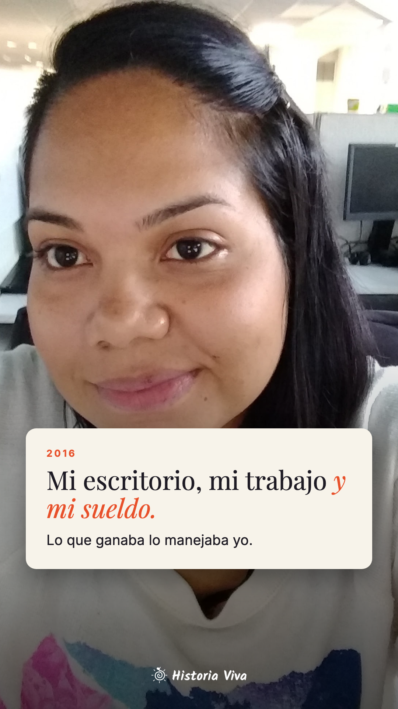
02-mi-sueldo.png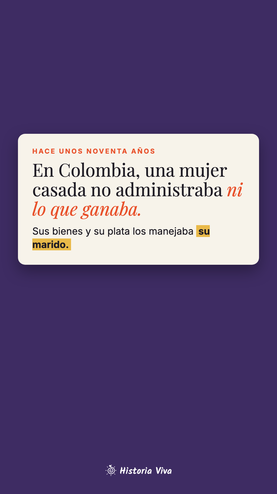
03-hace-noventa.png04-encuesta.pngEncuesta en el pecho: «¿Quién manejaba la plata en casa de tu abuela?» Ella · Él · Nunca lo preguntéConexión · caja de preguntas
01-flash.mp4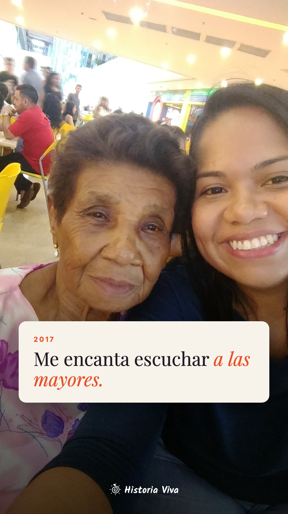
02-escuchar.png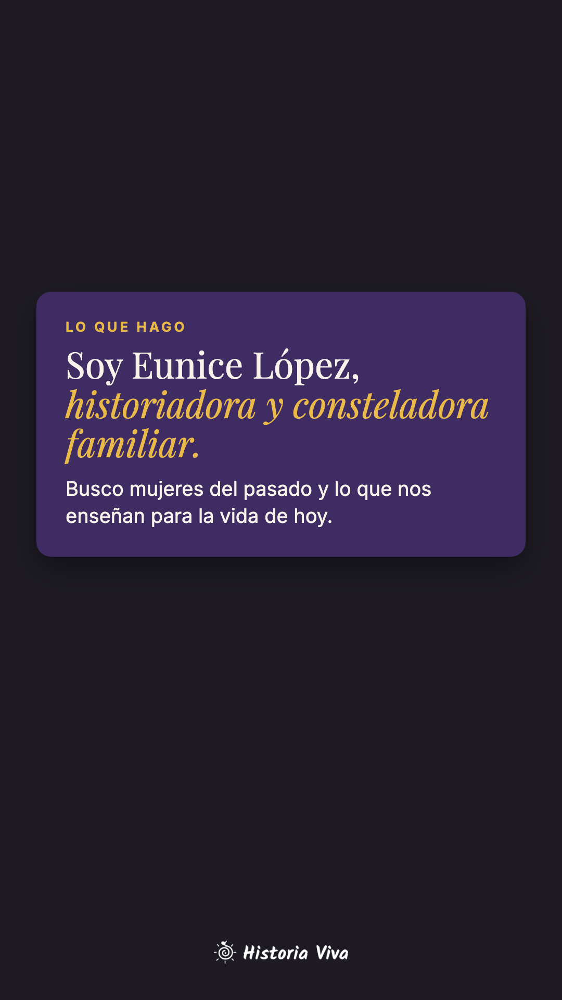
03-lo-que-hago.png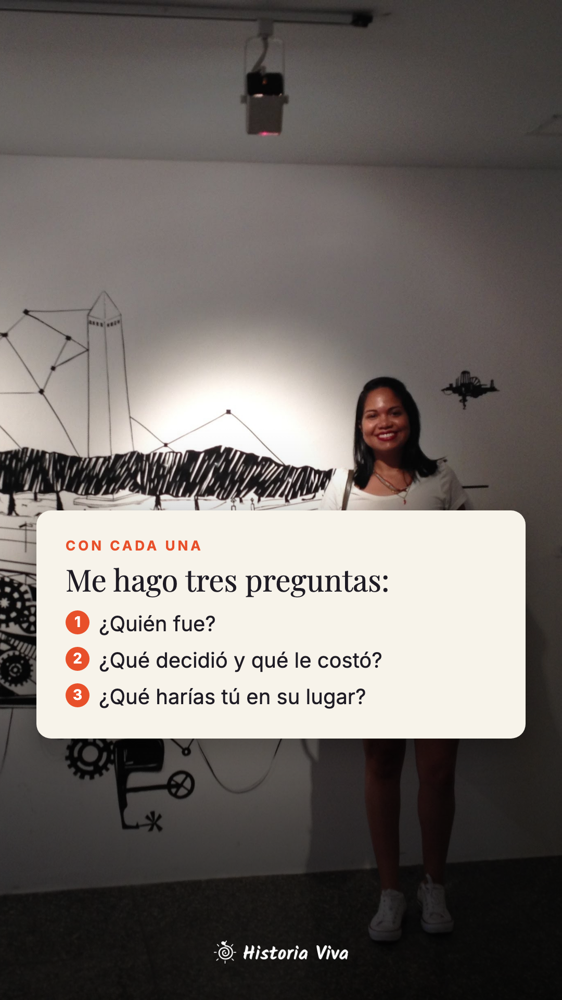
04-tres-preguntas.png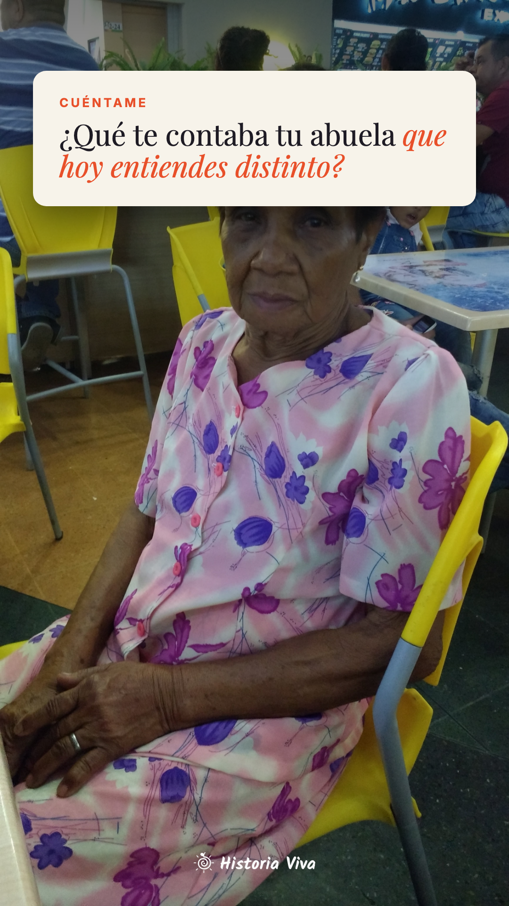
05-pregunta.pngCaja de preguntas abajoContraste · quiz
01-flash.mp4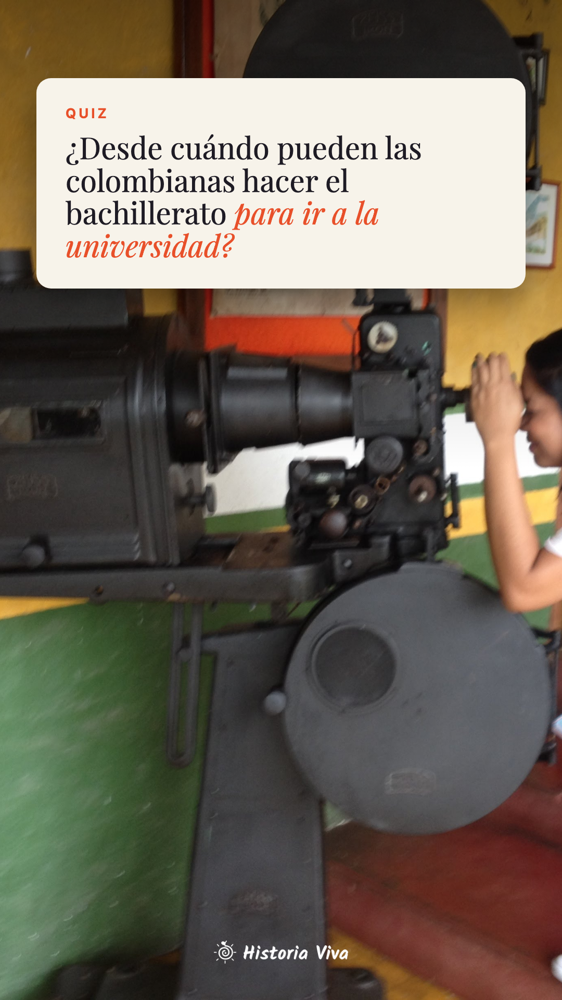
02-quiz.pngQuiz: Siempre · Hace unos 90 años ✔ · Hace unos 50 años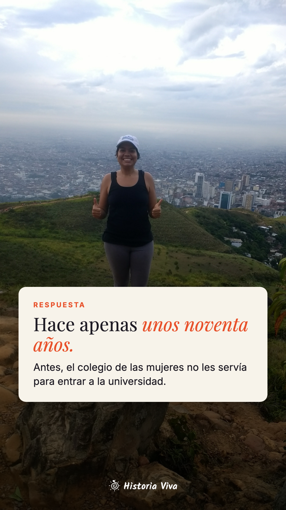
03-respuesta.png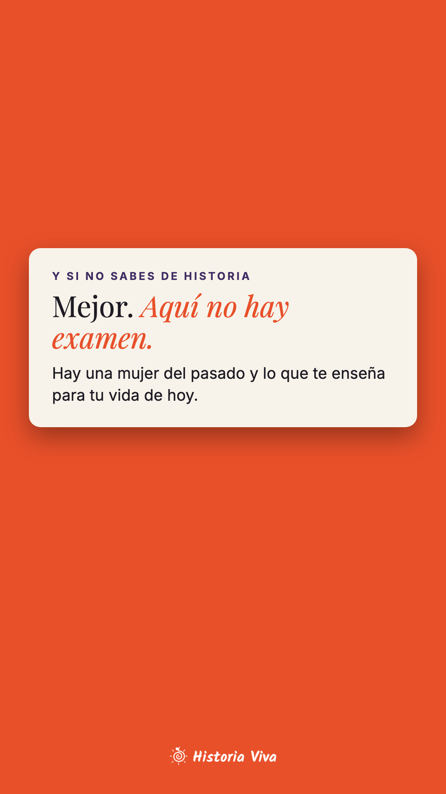
04-no-hay-examen.png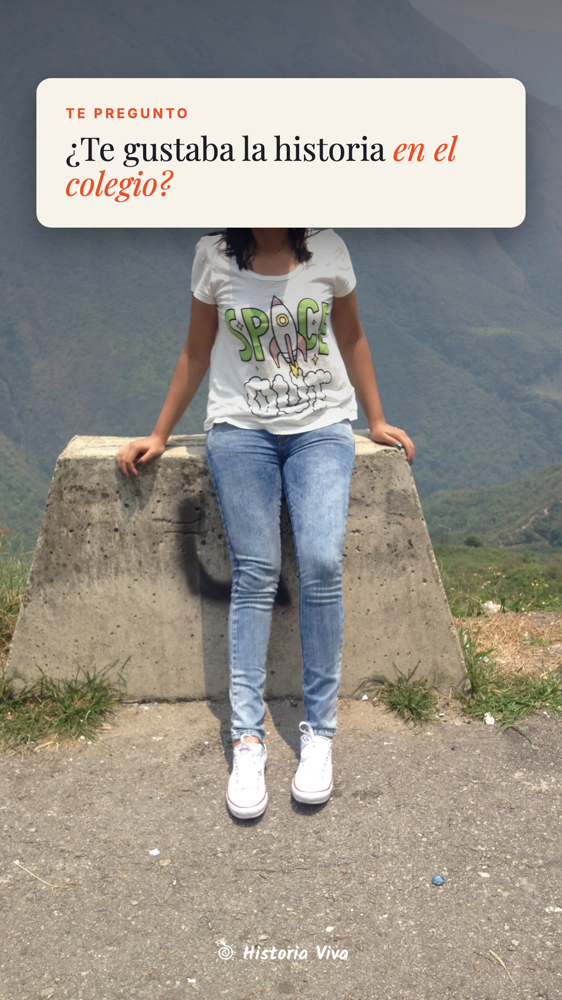
05-encuesta.pngEncuesta: Me encantaba · Me aburríaComenta CARTA
01-flash.mp4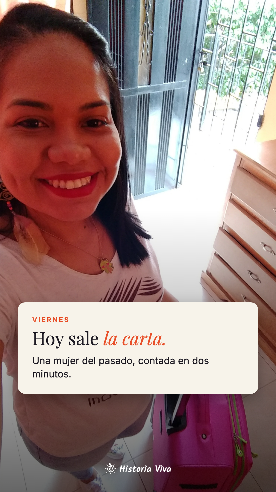
02-hoy-sale.png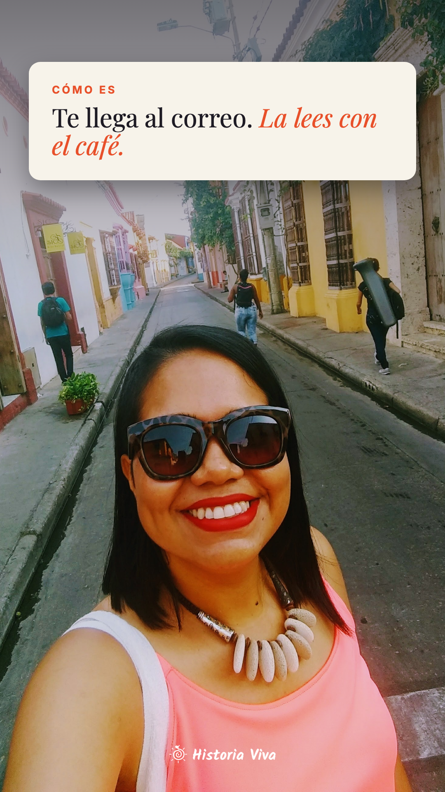
03-con-el-cafe.pngSlider ☕04-comenta-carta.pngComenta COMUNIDAD
00-flash.mp401-gancho.mp4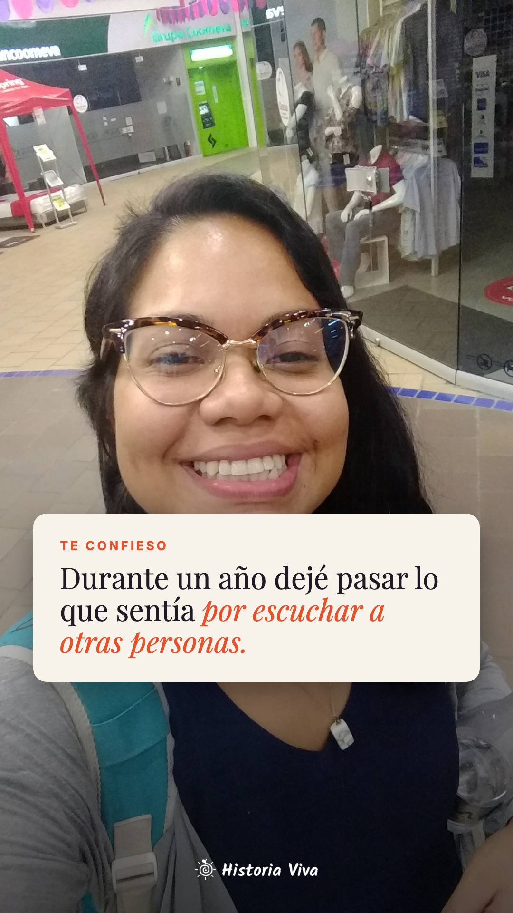
02-confesion.png03-que-es.png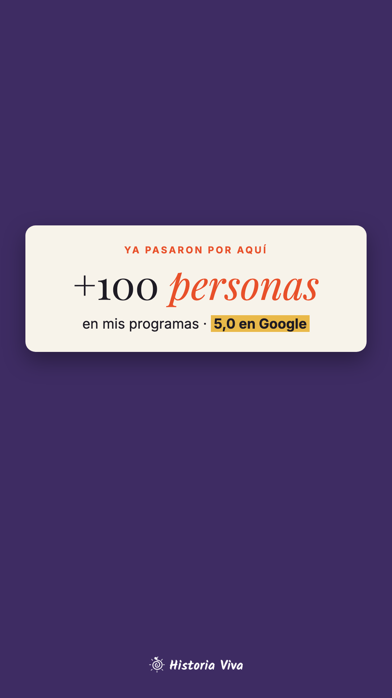
04-prueba.png05-comenta-comunidad.png06-resumen.mp4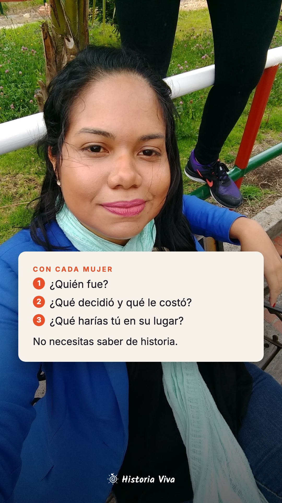
07-tres-preguntas.png08-comenta-comunidad.png